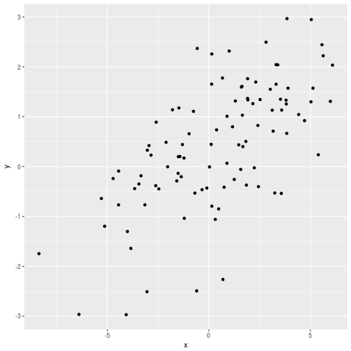
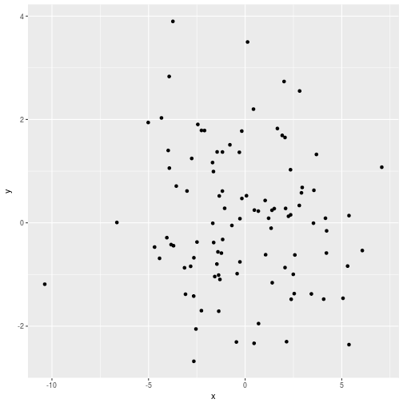
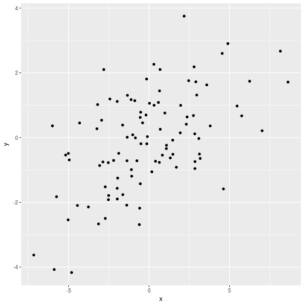

Quantitative Genetics
A Review of Statistics
Instructor: A Augusto F Garcia / Statistical Genetics Lab
Department of Genetics, Luiz de Queiroz College of Agriculture, University of São Paulo (Brazil)
Content
Expectation
Variance
Covariance
Regression
Correlation
Probability distribution
We will denote \(z\) for a random variable (quantitative trait, phenotype)
\(p(z)\) (probability density function)
\(\int_{-\infty}^{+\infty} p(z) dz = 1\)
\(P(z_1\leq z \leq z_2)=\int_{z_1}^{z_2}p(z) dz\)
Normal distribution
\[f(z)=\frac{1}{\sqrt{2\pi\sigma^{2}}}e^{\frac{-(z-\mu)^2}{2\sigma^{2}}}\]

Expectation
- First moment about the origin, expected value, expectation, mean
\[E(z)=\mu=\int_{-\infty}^{+\infty} z \, p(z) \, dz\]
Properties
- \(E(x+y)=E(x)+E(y)\)
- \(E(cx)=c E(x)\)
Variance
- Second moment about the mean
\[\sigma^2=\int_{-\infty}^{+\infty} (z-\mu)² \, p(z) \, dz=E[(z-\mu)^2]\]
\[\sigma² = E(z^2)-[E(z)]^2\]
If \(z\) are deviations around the mean (e. g. after scaling)
\(\sigma^2=E(z^2)\)
Formula
\[\sigma^2=\frac{1}{n-1}\left[ \sum z^2 - \frac{(\sum z)^2}{n} \right]\]
z <- c(1,3,4,8,2,7)
z
## [1] 1 3 4 8 2 7
a <- sum(data^2)
a
## [1] 143
b <- (sum(data))^2
b
## [1] 625
(v <- (a-b/6)/5)
## [1] 7.766667
var(z)
## [1] 7.766667
A measure of dispersion
var(c(2,3,3,4,5,6,6))
## [1] 2.47619
var(c(0,1,3,5,6,7,9))
## [1] 10.61905
Joint Distribution
\[P(y_1 \leq y \leq y_2, \, x_1 \leq x \leq x_2) = \int_{y_1}^{y_2}\int_{x_1}^{x_2} p(x,y) \, dx\, dy\]
Conditional probabilities \[P(y_1 \leq y \leq y_2 | x) = \int_{y_1}^{y_2} p(y|x) \, dy\]
Remember that \[p(x,y)=p(y|x) \, p(x)\]
Expectation \[E[f(x,y)]=\int_{-\infty}^{+\infty} \int_{-\infty}^{+\infty} f(x,y)\,p(x,y)\,dx \, dy\]
Covariance
\[\sigma(x,y)=E[(x-\mu_x)(y-\mu_y)]\]
\[\sigma(x,y)=E(xy)-\mu_x \mu_y=E(xy)-E(x)\,E(y)\]
Formula
\[\sigma(x,y)=\frac{1}{n-1}\left[ \sum xy - \frac{\sum x \sum y}{n} \right]\]
x <- c(1,3,4,8,2,7)
y <- c(2,4,3,9,4,9)
(a <- sum(x*y))
## [1] 169
b <- (sum(x)*sum(y))
b
## [1] 775
(Cov <- (a-b/6)/5)
## [1] 7.966667
cov(x,y)
## [1] 7.966667
Covariance
- Measure of linear association between \(x\) and \(y\)
## [,1] [,2]
## [1,] 9.478564 2.506905
## [2,] 2.506905 1.585234

## [,1] [,2]
## [1,] 9.3107078 -0.3321092
## [2,] -0.3321092 1.8144215

## [,1] [,2]
## [1,] 10.787758 4.402369
## [2,] 4.402369 2.104108

## [,1] [,2]
## [1,] 8.550804 -3.714634
## [2,] -3.714634 1.865854

Useful Identities
\(a\) is a constant, \(x\) and \(y\) are random variables
- \(\sigma(x,x)=\sigma^2(x)\)
- \(\sigma(a,x)=0\)
- \(\sigma(ax,y)=a \, \sigma(x,y)\)
- \(\sigma(ax,by)=ab \, \sigma(x,y)\)
- \(\sigma^2(ax)=a^2\sigma^2(x)\)
- \(\sigma[(x+y),(w+z)]=\sigma(x,w)+\sigma(x,z)+\sigma(y,w)+\sigma(y,z)\)
- Very important: \[\sigma^2(x+y)=\sigma^2(x)+\sigma^2(y)+2\sigma(x,y)\]
Regression
- Linear models: a very good approximation for initial studies
- For associations: \[y = \alpha + \beta x + e\]
- \(y\) predicted by the model: \[\hat{y} = \alpha + \beta x\]
- \(x\) is the predictor (or independent variable)
- \(y\) is the response (dependent variable)
- \(\alpha\) and \(\beta\) are estimated to give the best fit to the joint distribution of \(x\) and \(y\)
Least Squares
- Criteria: minimize \(\bar{e^2}\)
- Recall that \(e\) are deviations, so \(E(e^2)\) is the residual variance
- \(e=y-\hat{y}=y-a-bx\)
- After some derivations: \[a= \bar{y} - b\bar{x}\] \[b=\frac{Cov(x,y)}{Var(x)}\]
- This shows the relation between covariance (dependence) and the slope of the linear regression
Properties
- \(E[e]=0\)
- The amount of the variance of \(y\) explained by the regression is maximum
- \(Cov(x, e)=0\)
Correlation
- A dimensionless measure of association \[r(x,y)=\frac{Cov(x,y)}{\sqrt{Var(x)\,Var(y)}}\]
- Therefore, \[b(y,x)=r\sqrt{\frac{Var(y)}{Var(x)}}\]
- \(r^2\): coefficient of determination (proportion of variance of \(y\)
explained by the regression)
- Regression variance: \[r^2 Var(y)\]
- Residual variance \[(1-r^2) Var(y)\]
## [1] 0.559017

## [1] 0

## [1] 0.8944272

## [1] -0.9391486

Example
Correlation between genotypic and phenotypic values
\[z = G + E\]
\(\sigma(z,G)=\sigma[(G + E),G]=\sigma(G,G)+\sigma(E,G)=\sigma^2_G + \sigma_{G,E}\)
\(\rho(G,z)=\frac{\sigma_{G,z}}{\sigma_G \sigma_z}=\frac{\sigma^2_G + \sigma_{G,E}}{\sigma_G \sigma_z}\)
- If \(\sigma_{G,E}=0\):
\[H^2=\rho^2(G,z)=\frac{\sigma^2_G}{\sigma^2_z}\]
know as the heritability in the broad sense (proportion of the total phenotypic variance that is explained by genetic factors)
Homework
- Read Chapter 2 and 3 of Lynch and Walsh Book